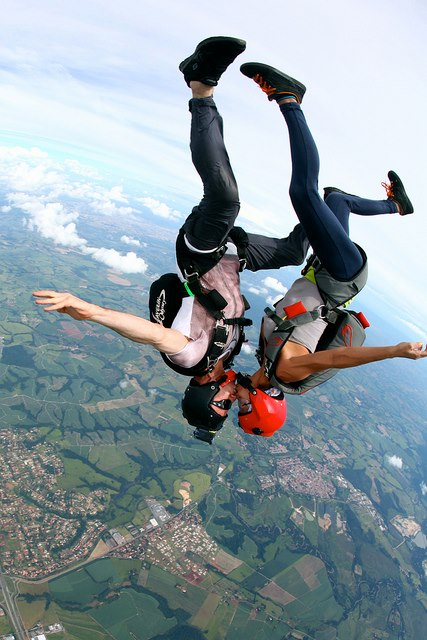
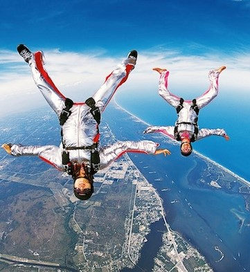

|  |

|
|
|
El paracaidismo es un deporte aeronáutico que se practica para aquellas personas que quieren competir o simplemente divertirse. Los saltos de caída libre se realizan desde una altura máxima de 4.000 metros y una mínima de 850 metros. En este caso, durante la caída libre, antes de abrir el paracaídas, los paracaidistas "vuelan" de forma relativa, aunque siempre continúan cayendo; esto divide la actividad en dos modalidades totalmente distintas: la caída libre y el vuelo con paracaídas.
|
El paracaidismo es un deporte que requiere de estar en buena forma física, no tener problemas cardíacos, ni haber donado sangre recientemente y no haber consumido medicamentos que puedan afectar el comportamiento. La edad varía de compañía a compañía. Para más información visita este
link o ve directo a las preguntas frecuentes.
|
El equipo necesario lo proverá la empresa con la que reservaste y se te entregará el día agendado en caso de ir con instructor, y debes asegurarte que te den 2 paracaídas (el principal y el de reserva), un casco, un par de guantes, gafas, y altímetro. Si lo deseas comprar visita este link.
|
|  | |
|
“La seguridad en este deporte es extrema, y más en el salto tándem –explica Gonzalo Riera-. Cualquier riesgo que pueda haber es por no respetar las normas más básicas de seguridad”. Sin embargo, el 10% de las muertes que se dan es por no tirar para abrir el paracaidas a tiempo, debido a la parálisis causada por la impresión de haber saltado, por lo que debes saber que debes abrirlo entre 40 y 45 segundos después de haber saltado. Si deseas saber más al respecto da click aquí.
|
|
¿Qué ropa debo usar?
Te sugerimos llevar ropa cómoda, jeans, pants playera cuello redondo(no tipo polo) tenis (no zapatos, zapatillas ni botas).
¿Hay restricciones en cuanto al peso?
El peso máximo es de 90 kilos.
¿Qué pasa si el paracaidas no abre?
Los equipos cuentan con 2 paracaídas, un principal y uno de reserva. Así mismo cuentan con un dispositivo de apertura automática, que en caso de alguna eventualidad, abre el paracaídas de reserva automáticamente a una altura programada previamente.
¿Puedo usar lentes o pupilentes al saltar?
Sí, debido a que se colocan unos gogles especiale, los lentes no son un impedimento.
¿Qué pasa si me arrepiento de saltar en el avión?
Sin ningún costo extra te regresan a tierra, sin embargo, aunque no hayas saltado no habrán devoluciones.
¿A qué velocidad decenderé?
En la caída libre se alcanzan los 200km/h.
¿Me puedo lastimar por la apertura del paracaidas?
No, los paracaidas están diseñados para abrir suavemente sin probabilidad de sufrir lesiones.
|